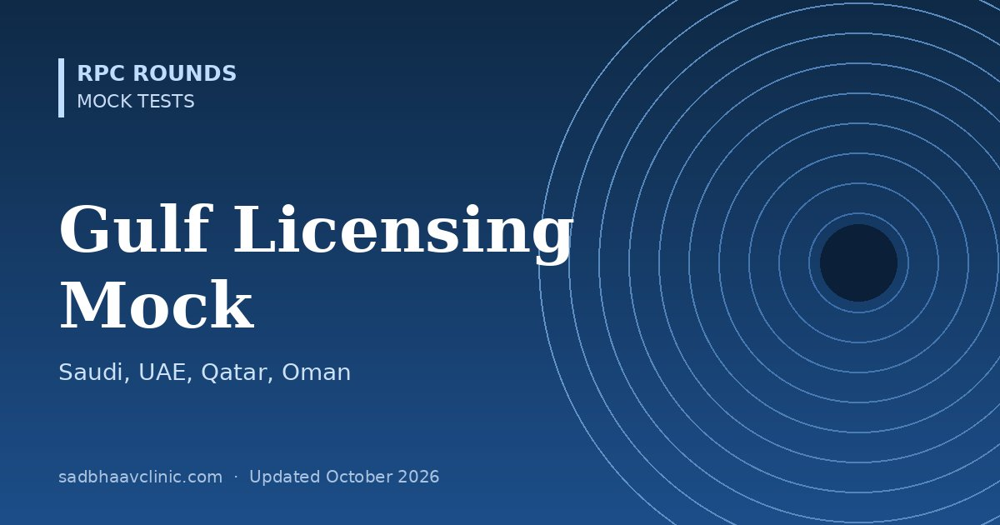

Gulf Ophthalmology Licensing Mock Test: SCFHS, DHA, DOH, MOHAP (50 MCQs)
Last updated: October 2026
A timed 50-question mock for ophthalmologists preparing for licensing or classification exams in Saudi Arabia, the UAE, Qatar, Oman, Kuwait and Bahrain. These are computer-based, single-best-answer exams that test practical clinical ophthalmology.
- Topic weighting follows the official SCFHS ophthalmology blueprint: emergency, anterior segment and refractive surgery, and comprehensive ophthalmology (pathology, anaesthesia, general) carry the most questions, followed by paediatrics and glaucoma.
- Format: four options, one best answer, 50 minutes, no negative marking.
- Every answer explained, with a pearl, and a topic-by-topic score at the end.
Planning to work or train abroad? Read our guide to ophthalmology exams abroad for formats, eligibility and official links.


Want thousands more practice questions?
OKAT Decoded covers the same core ophthalmology curriculum in 10,200 original MCQs, every answer explained, with 18 full-length mock tests.
All questions are original and written for practice. They are not taken from any past paper, and this test is not affiliated with or endorsed by the examining body. Exam formats change: confirm details on the official website.
📘 Want more exam-ready material? See Most Commons in Ophthalmology on Kindle, or browse all my books.
Looking for an eye specialist in Ahmedabad? Learn about our Eye Department or book a consultation with Dr. Dhaval Patel.